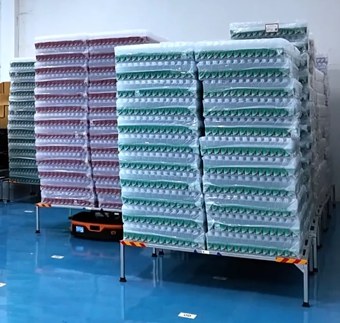
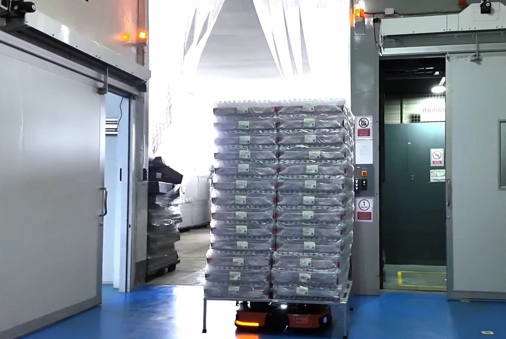

Software Developer · PJW Plastic
ส.ค. 2567 – ปัจจุบันAug 2024 – Presentพัฒนาและดูแลแพลตฟอร์ม microservices ขององค์กร (.NET 8 + Vue 3) ตั้งแต่ออกแบบฐานข้อมูล ส่วนติดต่อผู้ใช้ การติดตั้งระบบ จนถึงการสนับสนุนผู้ใช้งานหน้างาน
Build and maintain the company's .NET 8 + Vue 3 microservices platform, from database design and UI through deployment and shop-floor support.
- พัฒนาระบบยืนยันตัวตนกลางและ Single Sign-On (OAuth 2.0 / JWT) ให้ผู้ใช้เข้าสู่ระบบได้หลายไซต์ด้วยบัญชีเดียว พร้อมกำหนดสิทธิ์ตามบทบาท เมนู และบริการ
- พัฒนาระบบแจ้งเตือนกลางผ่าน LINE ด้วย Outbox Pattern ที่ทุกโมดูลใช้ร่วมกัน รวบรวมข้อความก่อนส่ง เพื่อไม่ให้งานหลักต้องรอการส่งข้อความ และลดการแจ้งเตือนซ้ำซ้อน
- พัฒนาบริการสายอนุมัติกลาง ที่อ้างอิงผังองค์กรจริง และใช้ร่วมกันในทุกระบบที่มีขั้นตอนอนุมัติ
- ติดตั้งระบบบน IIS โดยแยก Application Pool ต่อบริการ ดูแล CI Pipeline บน Azure DevOps พร้อมตรวจรูปแบบโค้ดอัตโนมัติ และวิเคราะห์หาสาเหตุของปัญหาบนระบบ Production (Root Cause Analysis)
- Built the central identity and single sign-on service (OAuth 2.0 / JWT): one account across multiple sites, with access controlled by role, menu and service.
- Built the central LINE notification service on the outbox pattern, reused by every module; messages are batched so core work never waits on delivery and users are not flooded with duplicates.
- Built the central approval workflow service driven by the real organisation chart, shared by every system with an approval step.
- Deploy to IIS with an isolated application pool per service, maintain the Azure DevOps CI pipeline with automated code-style checks, and perform root cause analysis on production issues.
โครงการสำคัญ
Key Projects
SWMS — ระบบบริหารจัดการคลังสินค้าร่วมกับหุ่นยนต์ AMRSWMS — Warehouse Management System with AMR Robot Integration · 2568 – 25692025 – 2026
- พัฒนาระบบเบิก หยิบ และจัดเรียงพาเลท โดยสั่งงานหุ่นยนต์ AMR ผ่านระบบคิวทีละรายการ ป้องกันการสั่งงานซ้ำและงานค้าง
- เชื่อมต่ออุปกรณ์หน้างานผ่าน Modbus TCP และ MQTT รวมถึงควบคุมประตูอัตโนมัติให้หุ่นยนต์ผ่าน และแสดงสถานะงานแบบเรียลไทม์
- Built stock issue, picking and pallet arrangement that dispatches AMR robots through a one-at-a-time queue, preventing double dispatch and stuck jobs.
- Integrated floor hardware over Modbus TCP and MQTT, including automatic door control for the robots, with live task status.
Stack: .NET 8, Quartz.NET, SignalR, Modbus TCP, MQTT, RCS-2000 API, Vue 3 + TypeScript



OAR — ระบบขออนุมัติปฏิบัติงานนอกสถานที่และคำนวณเบี้ยเลี้ยงOAR — Outside Activity Request & Allowance System · 2569 – ปัจจุบัน2026 – Present
- ออกแบบตารางอัตราเบี้ยเลี้ยงแบบอิงวันที่มีผลบังคับใช้ คำนวณเบี้ยเลี้ยงรายบุคคลอัตโนมัติ แจ้งเตือนเมื่อเกินวงเงิน และไม่กระทบเอกสารที่อนุมัติแล้วเมื่อปรับอัตรา โดยแยกข้อมูลแผนและข้อมูลจริงของการเดินทาง
- Designed an effective-dated allowance rate table that calculates each person's allowance automatically, flags over-limit lines and leaves approved documents unchanged when rates change, with planned and actual trips tracked separately.
Stack: .NET 8, EF Core 8, SQL Server, Vue 3 + TypeScript
AtlasTMS — ระบบบริหารจัดการการฝึกอบรมพนักงานAtlasTMS — Training Management System · 2569 – ปัจจุบัน2026 – Present
- พัฒนาระบบบริหารหลักสูตร รอบอบรม และประวัติการสอบรายบุคคล พร้อม Skill Matrix ระดับองค์กร และการควบคุมรุ่นหลักสูตร ที่ตรวจสอบย้อนหลังได้ว่าพนักงานแต่ละคนอบรมหลักสูตรรุ่นใด
- Built course, session and per-person exam history management with an organisation-wide skill matrix and course revision control that shows which revision each employee was trained on.
Stack: .NET 8, EF Core 8, Vue 3, Pinia, Element Plus, SSRS

BXI — ระบบติดตามกล่องหมุนเวียนBXI — Returnable Box Tracking System · 2568 – 25692025 – 2026
- พัฒนาระบบติดตามกล่องหมุนเวียนระหว่างคลังสินค้า สายการผลิต และลูกค้า พร้อมแอปพลิเคชัน LINE LIFF สำหรับบันทึกรายการผ่านมือถือ และแจ้งเตือนกล่องค้างส่งคืนอัตโนมัติทุกเดือน
- Built returnable box tracking across warehouse, production and customers, with a LINE LIFF app for recording movements by phone and automatic monthly reminders for unreturned boxes.
Stack: .NET 8, LINE LIFF, LINE Messaging API, Flex Message, Quartz.NET, Vue 3, SQL Server

Moventra — ระบบจองและเช็กอินรถรับ–ส่งพนักงานMoventra — Employee Shuttle Booking & Check-in System · 25692026
- พัฒนาระบบจองรถและที่นั่งรายรอบ ยืนยันการขึ้นรถจริงด้วย QR Check-in และแสดงสถานะที่นั่งแบบเรียลไทม์ผ่าน SignalR เพื่อป้องกันการจองซ้อน
- Built per-trip vehicle and seat booking with QR check-in for actual boarding and live seat availability over SignalR to prevent double booking.
Stack: .NET 8, SignalR, Vue 3, Leaflet, html5-qrcode

Safety Patrol — ระบบตรวจสอบถังดับเพลิงSafety Patrol — Fire Extinguisher Inspection System · 2568 – 25692025 – 2026
- ออกแบบโครงสร้างข้อมูลโซน → จุดตรวจ → ถังดับเพลิงรายถัง และบันทึกผลการตรวจพร้อมภาพหลักฐานรายจุด ตรวจสอบย้อนหลังได้ว่าตรวจเมื่อใด โดยผู้ใด และอยู่ในสภาพใด
- Designed a zone → inspection point → extinguisher data model and recorded each inspection with per-point photo evidence, traceable by date, inspector and condition.
Stack: .NET 8, EF Core 8, Vue 3, SSRS

OT Kiosk — ระบบบันทึกคำขอทำงานล่วงเวลาผ่านตู้ KioskOT Kiosk — Overtime Request Kiosk System · 25692026
- พัฒนาหน้าจอบันทึกคำขอทำงานล่วงเวลาสำหรับตู้ Kiosk หน้างาน บันทึกหลายคนในครั้งเดียวด้วยการสแกนรหัส รองรับภาษาเมียนมา และส่งเข้าสายอนุมัติอัตโนมัติแทนเอกสารกระดาษ
- Built an overtime request screen for shop-floor kiosks: record several employees at once by scanning codes, with a Burmese option, routed to approval automatically instead of paper forms.
Stack: .NET 8, n8n, Vue 3, vee-validate + Yup, FullCalendar

ระบบอื่นที่พัฒนาOther Systems
- ระบบขอทดลองผลิตตัวอย่าง (R&D Sample Trial Request) สำหรับฝ่ายวิจัยและพัฒนา พร้อมแอปพลิเคชันมือถือสำหรับบันทึกผลการทดลอง
- R&D Sample Trial Request System with a companion mobile app for recording trial results.